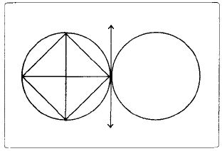

Беседа 2557 от 3877 · Беинса Дуно
Двете колела
„Отче наш“
Пишете върху темата: „Зависимостта на валежите“. И върху втора тема пишете: „Зависимост на богатството“.
Защо едни хора са богати, а други бедни? Богатството зависи от нещо. Каква е зависимостта на богатството? Какво значи зависимост? Нали се казва: „Зависим е той“. Онова, от което зависиш, е по-силно от теб, то ти дава направление и до известна степен ти не си свободен. Но има една зависимост в света, която не показва подчиненост, не означава, че ти не можеш да направиш нещо. Синът е зависим от бащата, а дъщерята е зависима от майката. В хората има един стремеж да се освободят от тази зависимост. Представете си, че вие сте в зависимост от светлината: ако тя не дойде, не може да ходиш, не може да тръгнеш. Зависим сте и от въздуха: ако той не дойде, не може да се поддържа животът ти.
Та има една зависимост, от която може да се освободите, а има друга зависимост, от която не може да се освободите. Казвате: „Аз искам да бъда свободен“. Има една зависимост, от която ако се освободиш, както мислят съвременните хора, тази свобода носи смърт. Ако се освободиш от светлината, какво става? – Сляп си. Освободиш се от водата – изсъхва ти гърлото, освободиш се от хляба – разваля се стомахът ти. И когато се освободиш от всичко, какво става? – Напущаш Земята. Туй вече е свобода, ти си идеално свободен. По някой път във вас се заражда едно желание: онези, които, да кажем, са пострадали в своите чувства, имат желание да се освободят от любовта. Друг някога казва: „Дотегна ми живота, искам да се освободя от него!“ Той иска да се освободи от Живота. Хората имат разни чувства...
Има ред разсъждения, които не допринасят нищо в даден случай. Представете си, че вие сте музикант, запознат сте много добре с всички гами, но отивате да жътва при един земеделец. Какво ще ви ползват гамите? Земеделецът не иска да знае как разбираш гамите. Умееш ли добре да жънеш със сърпа, това го интересува и казва: „Другото е празна работа, то нито е за ядене, нито е за пиене!“ Ако речеш да му разправяш за гамите, казва: „Остави тази работа, тя е много проста! Житото и сърпът тук са важни!“

Този кръг е много скържав, не иска да отпусне малко кредит, не е добре финансиран... В геометрията вие сте изучавали кръга. На фигурата имате две окръжности и една тангента, която има една допирна точка с окръжността. Сега, какво е далечното приложение на една тангента? Това са две зъбчати колела – тия окръжности са в движение и са зъбчати колела, които имат допирна точка в един зъбец. Ако тия колела се движат в една и съща посока и имат само една допирна точка, какво ще си предадат? Едно от колелата е в зависимост от другото колело. Имате и една тангента. В случая кой е в зависимост – тангентата или колелото? Под тангента се разбира влиянието, което тази права линия оказва. От двете колела едното зависи от другото. Когато едното колело се движи, другото в коя посока ще се движи? Ще се движи в същата посока, но после туй движение ще вземе един противоположен характер.
Сега, вие може да използвате една тангента. Инженерът знае за тангентите, използва ги, туря ги да работят, прави цели фабрики – туря ги в движение, туря колелата да се въртят, прави станове. Това са все тангенти и колела. Ако не разбира туй отношение, човек казва: „Какво има – две окръжности, които се допират и една тангента“. Това е на физическия свят.
Сега, какво положение могат да имат тия тангенти? Първото положение: колелата се движат, тангентите се движат – имате станове. Второто положение: около движението на тия колела и станове се натрупват тангенти като някакви същества, които седят прави – и те са тангенти и те правят нещо на стана. Ако разгледате тия тангенти на физическото поле, те движат колелата и после стоят и правят нещо. Как ще си обясните, защо виждате, че някой път има движение? Всяко едно движение е свързано с някакъв процес. Ще видите, че тази тангента се движи ту наляво, ту надясно; друга тангента се движи назад-напред. При всичките тия движения най-първо колелото трябва да се завърти, да се образува един стан. Сега, мога да ви наведа на такива съчетания, които ги има в Природата. В Природата има отлично тъкане, тя е научила човека да тъче, тя е образувала тия тангенти, тия движения на колелата. Защо трябва да има колело? Защото в колелата има най-малко съпротивление. Когато един предмет се движи кръгообразно, съпротивлението е най-малко. Това е механичната страна на обяснението. Да кажем имате радиално движение. (Учителя начерта двата перпендикулярни диаметъра на фигурата). При радиалното движение имате само една допирна точка с окръжността. При диаметралното движение имате две допирни точки с окръжността. Да допуснем обаче, че имате квадратно движение в кръга. (Учителя начерта страните на квадрата в окръжността).
Туй, което ви изяснявам, мяза на музиканта, който знае всички гами, и онзи земеделец, при когото отишъл да работи. Теоретическата страна на въпроса е това. Ако завъртите този квадрат около центъра му, какво ще се образува? Ще образува кръга. При този кръг имате четири кардинални точки – само четири точки, които се допират, които имат отношение с окръжността. Теоретически погледнато, окръжността по какво се отличава? Тя се образува от множество, от безброй точки, които са в движение в една посока. Радиусът има само една допирна точка с окръжността, диаметърът има две допирни точки, тогава туй множество от какво се получава? Ще кажете, че кръгът се образува от движението на един радиус. Тогава в една сфера имате безброй радиуси. Това е така в механичния свят. Ако придвижите този радиус, който има само една допирна точка с окръжността, той ще образува кръга. Но един жив кръг може ли да го направите от един радиус? Той трябва да се размножи.
Както виждате, следствието е много далечно, т. е. един радиус да се превърне в една разбрана теория. Има неща много мъчни. Те са тъй мъчни, както, ако ви кажат да опишете какво нещо е сладкото. Описвате го, описвате го, но слушащият не може да разбере сладкото яде ли се, пие ли се? Вие как ще опишете сладкото? Ще кажете, че сладкото предизвиква приятно разположение. Е, колко е приятно? Вярно е, че предизвиква приятно разположение, но понякога сладкото може да е толкова силно, че да предизвика неприятно усещане. При захарина например имате съотношение 700 килограма захар за 1 кило захарин – ако го опиташ, ще съжаляваш.
Понеже всички сте земеделци, вас ви интересува само сърпа и житото, т. е. какво ще изкарате, какво ще ядете. Казвате: „Тия работи са празни“. Например неразположен си; от какво зависи твоето разположение? Банкер си, правил си някои операции на борсата, изгубил си. Питат те: „Какво става?“ – „В борсата изгубих всичкото си състояние!“ Друг път си в училище, полагаш изпит пред някой много учен професор, дава ти една трудна задача и те скъсва. Ти се връщаш неразположен, всичко ти е притъмняло. Скъсан си бил. Как си скъсан? Аз виждам, че никъде не си скъсан – дрехите ти са здрави, палтото ти е здраво. Това са само иносказателни неща. Вярното е, че тази година е изгубена и наново трябва да се държи изпит. Питам откъде накъде в този професор е проникнало желанието да те скъса? На теб ли остана да ти задава този мъчен въпрос? Какво отношение има професорът? Професорът иска да ти покаже колко той знае, да ти каже да мислиш. Той ще ти даде въпрос, който никога даже не си и сънувал, той иска да го разрешиш. Както в Средните векове са се мъчили да изчислят колко дявола може да играят на върха на една игла. Гледаш, че там няма никаква плоскост, така че на този връх колко хиляди дяволи могат да играят? Казваш: „Че отде да го зная?“ Сегашните учени хора, които се смееха на ония, които се занимаваха с този въпрос, и те се занимават с подобен въпрос. И научно доказват, че на този връх могат да играят милиони. Те не са виждали тия дяволи, а предполагат, че на върха могат да се съберат толкова хиляди частици. Сега хората с мисълта си разбират. Туй, което на физическото поле не може да видиш, не може да усетиш, ще го усетиш и ще го видиш със своята мисъл. Какво ще ти даде фактът, че разбираш колко частици се движат около един малък иглен връх? Ти имаш философия и казваш: „Знаеш ли с едно движение какво мога да направя?“ В една плевня си, извадиш кибритена клечка, драснеш, запалиш я – това е първото движение. Второто движение е запалване на сламата. И след половин или един час какво ще стане? Всичкото туй движение ще се предаде на сламата, а след като се задвижи цялата слама, плевнята ще изгори.
Сега, да ви покажа последствията, които може да произведе една дума. Идва някой учен просяк при един земеделец, закъсал е, иска да му направи една услуга, да му даде хляб. Земеделецът му казва: „Махни се, такива кучета не искам, да идете да работите!“ Този си изважда кибрита и казва: „Ще му докажа, че не съм куче, а учен човек“. Отива при плевнята и тя цялата пламва. Защо изгаря плевнята, как ще обясните? Питам сега: кой е по-умен – земеделецът или просякът? Земеделецът е умен човек, че накара този просяк, който досега не е мислил, да мисли, накара го да изобрети, за измисли нещо. Сега, вие всички сте такива изобретатели: някой път запалвате плевнята в себе си. Това са състоянията ви, от които цяла нощ не можете да спите и се безпокоите. Вие не разсъждавате, че между земеделеца и просяка е станало едно естествено съприкосновение. Дойде ти някаква мисъл и казваш: „Моята работа е свършена, аз съм пропаднал човек, нищо няма да стане от мен!“ И като кажеш така, цялата вечер не можеш да спиш – твоята плевня се е запалила и цяла нощ се въртиш в леглото, премисляш това-онова. Това ли трябваше да кажеш на дошлия странник: „От вас, такива учени просяци, нищо няма да стане“? Ученият казва: „Ще стане нещо от мен и аз ще ти докажа, че твоята плевня ще гори!“ И той ще стане, ще запали плевнята и казва: „В бъдеще аз просяк няма да бъда!“ Този просяк, когато дойде втори път, няма да говори нищо друго, но ще каже: „Твоята плевня е изгоряла, аз съм майстор, мога да градя такива плевни“. Тогава земеделецът ще му даде пари и материал и той ще му съгради плевнята. Оправя се работата – той показва изкуството си да гради.
Вие не виждате зависимостта, която съществува в Природата. Ако изучавате клетките биологично, някой път ви се струва, че дадена клетка е много проста. Не, много умни са тия клетки. Когато туриш една клетка, тя дава разпореждане на всичките клетки каква функция да изпълняват. Ако изучавате клетките, ще видите, че когато се създава човешкият организъм, една мускулна клетка никога няма да влезе в стомаха, понеже клетките на стомаха са слаби, не са като клетките на мускулите. Тя казва: „Тази работа не е за нас“ и като по-силна отива да уреди мускулите. Клетките, които отиват да съградят нервната система, клетките, които отиват да съградят костите, функционално се различават. Тези, които създават мускулите, постепенно се оформят. Вие не подозирате как е създадено вашето тяло, не подозирате и нямате понятие за онова, което е ставало преди милиони и хиляди години. Създадени сте, а не знаете как е създадено тялото, как са създадени краката, ръцете, ушите, носа, вътрешните органи. Хората нямат още понятие за ония сложни процеси, които стават вътре в човешкия ум, за процесите, които стават във вашите чувства. Не знаете в даден случай кои са ваши и кои външни, не знаете туй, което зависи от вас. От земеделеца зависи да каже: „Ти си едно куче“, но от него не зависи да се запали плевнята.
Сега, можем да допуснем, че земеделецът ще каже така на просяка. Аз го вземам само като изяснение на нещо, което рядко става. Хората са добри, но има и сприхави. В дадения случай може ли да предположите, че земеделецът е запалил плевнята? Не можете да го допуснете. Не можете да допуснете, че този просяк е обидил земеделеца. Просяците изобщо не обиждат – когато просят, те се отнасят добре и все ще кажат някоя добра дума. Обидата не зависи от просяка. Вече втората обида, която може да произлиза от просяка, тя зависи от някого. Например, професорът скъсал един студент; от какво зависи това? Млад студент си, при теб има млада студентка, тя е красива. Когато влезе на изпит, тя минава, без да има даже половината от знанието, което имаш ти. Професорът я пуска, а теб, който знаеш два пъти повече от нея, те скъсва. Питам как ще обясните това явление? Аз ще обясня: имаш един слаб кон – колко ще го товариш? Имаш един силен кон – два пъти повече ще го товариш. Питат: „Защо натовари този кон?“ – Може да носи. – „Ами този кон защо малко го натовари?“ – Малко може да носи... Понякога хората имат една мярка и с някои се отнасят по-добре. Но как мислите? Когато хората се отнасят с теб добре, ти си един много слаб човек. Натоварят ли те някъде хубаво, значи си силен, можеш да носиш. Ако тия два коня се разговарят, единият ще каже: „Господарят много ме товари“, а другият ще каже: „Господарят много добре се отнася към мен – едва ми турят десетина кила“. Онзи казва: „На мен сто кила ми туря на гърба!“ Защо господарят е добър към единия кон, а лош към другия, коя е причината? Добър е към слабия, защото толкова може да носи; лош е към другия, защото той е силен, може да носи. В заключение, какво произвежда силата в света? Това са ред разсъждения. Ако искате да бъдете един силен кон, трябва да знаете последствията – много ще носите на гърба си. Ако искате да бъдете слаб, малко ще носите.
Добре, вземете сега другото положение. Казва някой: „Аз искам да бъда мъжествен, не искам да съм баба“. Например ти си млад момък и те вземат новобранец. Когато лекарите те изследват, пращат те в първата рота, на първо място, дават ти пушка. И щом се яви работа, на силния човек казват: „Той да иде!“ Все силния пращат да работи. Ако пък си учен човек, яви ли се трудна задача, винаги на теб я дават, защото ще я разрешиш. Ще се намериш в положението на онзи наполеонов инженер, на когото заповядали да направи мост за двадесет минути, за да минат войските през една река. Вика Наполеон един от своите инженери и му заповядва да направи бързо един мост. – „Нямаме инструменти, Ваше величество“. Императорът казва: „За двадесет и пет минути, за половин час мостът трябва да бъде готов, иначе ще те застрелят!“ Той седи, върти се, какво да прави? Идва му една идея, изправя се до брега на реката и гледа да заеме такова положение, при което краят на козирката му да опре на другия бряг. След това се обръща и гледа пак в коя точка опира краят на козирката му. Тогава измерва това разстояние, вече знае дължината на моста и започва да строи...
И на вас някой път ви казват да построите мост за двадесет и пет минути и ако не разрешите задачата, ще последва смърт. Като мислил, на инженера му дошло на ум да използва козирката си. Вие ще кажете: „Не е човешко да се изисква да бъде построен мост без никакви инструменти и, ако не може да го построи, да бъде застрелян“. Наполеон му казва, че, ако е майстор, ще построи моста. Къде е тук лошото? – „Ако за двадесет и пет минути не накараш ума си да работи, ще те застрелям!“ Отговаря: „Не мога“. Аз казвам: в Природата отношенията са почти все същите. Ние имаме много повърхностни понятия за методите, с които Природата работи. Да кажем, че искаш да бъдеш щастлив, искаш да бъдеш богат човек, искаш това-онова, но не знаеш лошите последствия. Ако си органически богат и имаш много мазнини по тялото, ще ти дойде една болест. Болестта винаги хваща мазните хора, защото има какво да вземе от тях. И мазният, след като боледува два-три месеца, съвсем изтънява, мазнините му изчезват, остават само неща, които са съществени за организма. Вие казвате: „Болестта ме съсипа!“ Съсипа те, но остана жив. Питам сега де е злото, ако болестта е дошла, а е взела мазнините? Мазнините не съставляват много голяма важност – те са вещества, които се изгребват. Онези, които са полезни, които тъкат, които работят, например мускулните клетки, те са важни. Мазнините нищо не означават. Ако лицето на някого е станало валчесто, това е безразборно натрупване на мазнини. Който много е напълнял, е човек, който добре не е складирал веществата: слага дето завърне – тук туря, там туря. Мяза на домакиня, която само събира нещата в този ъгъл, в онзи ъгъл и цялата къща е напълнена безразборно. И ако дойде една сприхава слугиня, та изчисти и изхвърли всички непотребни неща, ще придаде на къщата такъв вид, какъвто подобава. Дебелият човек уподобявам на бит-пазар, който се занимава с вехти дрехи, напълнил е складовете си с какви ли не чешити и боядисва стари неща, за да ги поднови. Старото ново може ли да стане? Не може да стане. Той ще обърне вехтата дреха от другата страна, подновява я, но има нещо, което липсва в дрехата – тя няма онази органична стойност.
Сега хората казват: „Ами старите дрехи?“ Старите дрехи да си вървят, да ги дадат на други. На бъдещите хората, които прогресират, им трябват нови дрехи. След като си боледувал, не обръщай дрехата, ами я изгори и нови дрехи си направи; нови обуща си вземи, старите изгори; нова шапка вземи – всичко старо изгори. Нови дрехи се позволяват на хората след всяка болест. Щом оздравее човек, трябва да сложи нови дрехи. Ще отпуснеш колкото ти трябват пари – това е за тялото. В старите дрехи, които носиш, се е скрила онази болест, тя е като проказа. Когато ти дадат нови дрехи, изгори старите, хвърли ги! Вземеш ли старите дрехи, проказата ще дойде в теб.
Същото туй е в света. Що е моралът в света? Някой иска да ти даде една идея, която носи проказа в себе си. Тази идея е огън. Дръж надалеч туй, което е зло в света – то носи проказа в себе си! Що е злото? – Проказа носи то. Щом влезе тази проказа, с теб е свършено. Що е доброто? Това са новите дрехи в света, от които ти си в друго състояние – можеш да мислиш, да работиш, всичко можеш да постигнеш постепенно. С новите дрехи всичко се постига. Но израза „нови дрехи“ вземете в широк смисъл.
Сега, що е тангента? Най-първо ще дойде едно зъбче, ще потегли колелото на твоето сърце, което е заспало и в теб ще настане движение, цяла фабрика ще се развие. Какво лошо има в това, ако колелото на Любовта с един зъбец само потегли колелото на вашето сърце и вие се подвижите? Или какво лошо има, ако Радостта дойде със своя зъбец и подвижи твоя ум? Какво лошо има в това, ако Истината дойде със своя зъбец и потегли колелото на твоята воля, която е била в бездействие? Лошото е, когато човек не знае да използва ония блага, които Природата носи и дава на човека.
Един англичанин, който според способностите си искал да стане инженер, но по стечение на условията свършил право, без да го желае, през целия си живот не могъл да се освободи от инженерството. Идва той, започва да проучва делото на някой клиент, но като рече да помисли върху него, веднага изскача инженерството. Разни планове започват да се въртят в ума му, взема той книгата, започва да чертае и прави някое изобретение. Чак след това вече започва да проучва делото... Който не разбира законите на Природата, ще каже: „Този глупав човек не си гледа работата, не проучва делото, ами седнал да чертае някакви планове, да изобретява нещо“. Когато този английски адвокат начертаел плановете, тогава той вече много добре проучвал и делата, а щом някъде се откажел от инженерството, и другите му работи не вървели.
Сега ще направя една аналогия: по някой път и вие седите, съвсем закъсали в света – станали сте туй, което не сте. Например беден студент си, нямаш достатъчно средства, окайваш се, но щом започнеш да учиш, започваш да конструираш света и нареждаш всичко. Ти си инженер, мислиш: „Така трябваше да бъде светът“ и чертаеш. След като философстваш, ти се връщаш на своето положение и казваш: „Какво ме интересува, аз ли ще оправям света!“ Не, ще оправиш себе си! Начертай онова, което Природата ти дава, начертай проекта на туй изобретение. След това ще започнеш да учиш.
И така, седят двамата студенти и виждат как професорът пуска тази студентка, а него скъсва. Какво трябва да прави той сега, какъв извод трябва да направи? Той ще каже: „Този професор е несправедлив, той има някакви тайни цели“. А умният професор казва на студента: „Ти си силен човек, а тя е по-умна – ред съществувания е работила върху себе си и е станала красива. Аз давам цена на нейната красота. Ти ред съществувания си мислил лошо, затова те скъсах – за да работиш и да станеш и ти красив“. Питаш: „Как ще стане тази работа?“ Преди десет прераждания тази красива мома, която професорът пуска на изпита, е била негова дъщеря. Той я търси и като я вижда, харесва я. Професорът може да те пусне, да бъде много снизходителен и да каже: „Ти си гениален“. Той има предвид да те ожени за своята дъщеря, която преди десет прераждания беше една спънка за теб. Сега за теб тази силна мома е едно условие да се повдигнеш, ако си станал много умен... Това са ред разсъждения, които трябва да разбирате. И връзката трябва да разбирате – връзката, която ви се струва не на място. Така е за сега, за бъдеще отношението ще бъде съвсем друго. Затова по- напредналите в живота казват: „Направи добро, пък го хвърли във водата“.
Не мислите за противоречията в света. На никого не давайте резолюция. Каквото и да се случи, на никого не давай резолюция. Ще дам един прост пример: дойде някой и те обере. Кажи така: „За добро е това нещо“. Когато влезе този разбойник, кое е по-хубаво – да ти вземе парите или да те убие? Влязъл човекът, искал зло да направи, но щом вземе парите, заминал. В дадения случай освобождават твоя живот. Какво лошо има в това, че ти взел парите? Има лошо. Къде е лошото за теб? В самата Природа има ли туй добро? Да предположим, че ти дадат 25 000 английски лири; ти изведнъж какъв ще станеш? Имаш весело настроение, но ти вземат тия 25 000 лири; изведнъж ще имаш друго настроение. Де е злото? Когато парите дойдат, органично какво ще ти донесат? Те може да са в злато, ами ако са в медни пари – 25 000 английски лири – и да те накарат да ги носиш! Кой от вас би могъл да носи 25 000 английски лири в медна стойност?
Сега, златото в Природата може да се привлече. Всякога има известни идеи и щом влязат във вас, те могат да привлекат златото. Пък има идеи, които привличат медта. Когато мислиш, трябва да знаеш всяка една твоя идея какво привлича. Вие ще се намерите в онова противоречие, в което се намерил един земеделец: той бил бездетен и се оплаквал, че животът няма смисъл. Имал той една крина жито, турена настрана. Казвал: „Господи, защо ми е това жито, като нямам деца да го ядат!“ Ритнал той житото, разпилял го и всичките житни зрънца станали на деца. Като ги видял толкова много, казал: „Че те ушите ми ще изядат!“ Взел една цепеница и започнал да ги убива (това е анекдот). Най-после останало само едно дете, което рекло: „Татко, не ме убивай, аз ще ти помагам!“ Земеделецът казал: „Като е едно, ще го търпя“... Хората са турили едно разрешение в света. Този земеделец се оплаквал, че няма деца, после ритнал. Трябва да си преведете какво означава ритникът, от който се образували тия безброй деца. Кои са безбройните деца? Вие се смеете. Някой може да преведе тази приказка... Ти имаш в себе си безброй желания, натрупал си тия деца, които викат и кряскат. Ти се оплакваш, най-после вземаш цепеницата, искаш да се самоубиеш. Тук има цяла философия на самоотричането – убиват децата. Казва се: постоянно умъртвявай, докато остане само едно желание, което да функционира; умъртви всяко желание, за да прогресираш в света. Неразбрани работи са тези.
Сега, ти седиш в живота и казваш: „Дотегна ми този живот, цял живот съм страдал като кон, не съм свободен!“ Или ти си един славей – хванат те, турят те в един кафез, но и там не си свободен, казваш: „Ограничен съм!“ Тогава кон ли трябва да бъдеш или славей? Има изходен път: ако искаш да се освободиш от положението на коня и от положението на славея, ти трябва да приемеш положението на човека. Но и като човек ще бъдеш ограничен. Какъв трябва да станеш? – Ангел. Можеш всякога да станеш ангел – всеки един от вас може да стане Ангел, когато прави добро. Всеки един от вас може да стане Ангел, когато прокарва Любовта. Ако ти не носиш Доброто в света, никакъв Ангел няма да станеш. Щом човек носи Доброто, вече има условия в него. Който съзнава, казва: „Ние ще станем Ангели в бъдеще“. Това не е нещо чудно в Природата. В първите три месеца на развитието си всички зародиши, които съществуват, си мязат. Щом минат трите месеца, тогава се появява формата, която показва какво ще излезе. Следователно през първите три месеца на нисшите състояния, през които минаваш, не мисли какво ще стане с теб. Чакай четвъртия, петия, шестия, седмия месец, за да видиш какво ще излезе. Първите месеци не показват какво ще стане от теб, т. е. не си давай мнението за работа, която е почнала от един месец. Нека се минат няколко месеца – най-малко три месеца. Нека се минат три деня, три месеца, три години, тридесет години, триста години, три хиляди години. Вие ще оставите тия периоди...
Казваш: „Какъв ще бъда в бъдеще?“ Аз ти казвам: „Сега си един кон, в бъдеще ще бъдеш един славей в кафез“. Но славеят казва: „Аз какъв ще бъда в бъдеще?“ Ти си един славей в кафез, в следния живот ще бъдеш един натоварен кон“. Ами че тия неща са разпределени вътре.
Вземете числото 21. Цифрата 2 означава отрицателна сила, 1 означава положителна сила. Най-първо имате отрицателното, после – положителното. Или имате числото 24: първото число пак е отрицателно, а 4 е положително. После имате числото 27 и така ги нареждате. Следващите какви ще бъдат? Имате само едно число, какво ще бъде следващото? – 21, 24, 27. Ако е като първото, пак ще бъде отрицателно. Колко ще бъде? – 22, 25, 28.
Ще минете в друга гама – пак ще бъде отрицателно. Когато в Живота се започне с една положителна сила, всякога се свършва с положителна; когато започнеш с отрицателна, всякога ще свършиш с отрицателна. Смени има. Трябва да знаеш с какво започваш – не може да започнеш със злото и да завършиш с доброто; и не може да започнеш с доброто и да свършиш със злото. Това са немислими неща. Можеш да мислиш, но не можеш да направиш едно добро и след туй да направиш едно зло. Само привидно е, когато човек прави Доброто, но в същност онзи, който прави добро, пак ще свърши с добро. Казвам: на това е обоснован великият закон в света. Никога не мисли зло за себе си и никога не си давай мнението, че от теб нищо няма да стане, понеже това е глупава работа. Господ те е създал за нещо и ти няма какво да се месиш в Живота. Ако не можеш да вършиш работа както трябва, не казвай, че Господ зле те е създал. Трябва да мислиш какво може да излезе от теб. Много работи могат да излязат – всичко може да излезе, ако знаеш как да работиш. Ако знаеш да свириш, музикант ще излезе; ако знаеш да мислиш, философ ще излезе; ако знаеш хубаво да пишеш, поет ще излезе от теб.
Първото нещо: ще се учите да съзнавате вашите погрешки. Една погрешка е съвсем странично и външно нещо. Никога не влагай в себе си неща, които не съществуват. Ти можеш да кажеш: „Мен Господ ме е забравил, Той към мен няма никакво отношение“. Ако Господ няма никакво отношение, то зависи тъкмо от мен; пък някой път ще съзная това положение. Когато аз направя едно гърне, какво ще мисли то за мен? Аз ще си служа с него и щом то си свърши работата, щом се счупи, това ще е признак, че гърнето е повишено, че е освободено и то ще мине в по-хубава форма. След всяко счупване гърнето прогресира. Ами че туй става и в училище. Вземете един професор, който пише на дъската и пита студентите: „Написахте ли?“ – „Написахме“. След това той заличава написаното – заличава го за удобство, а после пак продължава да пише. После пак изтрива другото решение. Така че, ако хубавите неща във вас се затриват, то професорът е свършил своята работа. Ти казваш: „Отиде онова хубавото, което имах!“ После следва втория процес, после – третия процес. Тези неща всеки ден ги гледате и ви правят впечатление. Нищо не е отишло, то продължава. Туй, което си имал, се е заличило, за да се внесе нещо по-високо от старото, да се провери.
Та казвам: когато се явяват две колела, ще знаете, че едното движи другото. Когато в Живота се яви едно противоречие, то всякога е най-малкият признак, че има движение в света. И от туй движение, което ти не разбираш, зависи твоето бъдеще.
Сега, работата остава. Някои казват: „Старите методи“. Старите методи означават, че във вас седи идеята майка ви да ви носи на ръце, на някоя люлка да ви туря, да ви пее „нани, нани“. Хубаво, това може една, две, три години. Но ти си станал 10-, 15-, 20-годишен момък, може ли майка ти да те люлее постоянно? Това положение в люлката е естествено до една, две, три години, но на четвъртата година ще излезете от люлката навън. Един, два месеца ще седиш в яйцето, но ако не решиш да излезеш от него, то ще се развали. По-хубаво е да те изядат, отколкото да се развалиш. Не може да стоиш в едно яйце. Всяка една мъчнотия ще стане една обвивка и ти трябва да намериш изходен път, за да излезеш навън из това яйце по какъвто и да е начин. Тогава казвате: „Да има някой да ми помогне“. Че нали ви помагат? Например идва един човек, обере те; не е ли той един професор, който те учи? Ти никога не си плакал, но започнеш да плачеш и казваш: „Взеха ми богатството, какво ще правя?“ След туй идва друг, пита те какво е станало, потупа те, даде ти пари. Сега, ако онзи не беше те обрал, ти нямаше да плачеш и другият нямаше да се запознае с теб – той внесе нещо повече. Казват: „Който краде, никак не прокопсва“. Сполети те някое нещастие; ти никога не си се молил на Бога, а сега започваш да Го търсиш. Де е нещастието? Идва Той, потупа те, запознаете се, става ти мирно на душата, идва в теб една нова мисъл. В света всичко онова, което става, е велико. Всичко, което става, е за добро и за полза. Всички препятствия, които съществуват, са само наглед, но те са един велик подтик. Туй колело движи света – каквото всеки един зъбец върши в света, е за добро. Туй е новата философия, новият път, по който хората трябва да вървят. И постиженията и всичкото бъдеще седи там.
Само светлият път на Мъдростта води към Истината. В Истината е скрит Животът!
3-та лекция от Учителя, държана пред Младежкия окултен клас
9 октомври 1936 г., петък, 5 ч. с., София, Изгрев